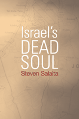

How Zionism became an exceptional ideology in the eyes of the West
How Zionism became an exceptional ideology in the eyes of the West


 How Zionism became an exceptional ideology in the eyes of the West
How Zionism became an exceptional ideology in the eyes of the West

|  |
Israel's Dead SoulSteven Salaitapaper EAN: 978-1-43990-638-5 (ISBN: 1-4399-0638-6) |
"As unsparing of the liberal multiculturalist embrace of Zionism as it is of the right-wing defense of Israeli violence, Salaita's stinging critique demonstrates how both deploy a demonization of Palestinians that normatizes Zionism and absolves it of its colonial violence. Israel’s Dead Soul is a must read for scholars of the Middle East, anti-racist activists and all those who care about social justice."
—Sunera Thobani, Associate Professor, Centre for Women's and Gender Studies, University of British Columbia
Israel's Dead Soul explores the failures of Zionism as a political and ethical discourse. Steven Salaita argues that endowing nation-states with souls is a dangerous phenomenon because it privileges institutions and corporations rather than human beings.
Asserting that Zionism has been normalized—rendered "benign" as an ideology of "multicultural conviviality"—Salaita critiques the idea that Zionism, as an exceptional ideology, leads to a lack of critical awareness of the effects of the Israeli occupation in Palestinian territory and to an unquestioning acceptance of Israel as an ethnocentric state. Salaita's analysis targets the Anti-Defamation League, films such as Munich and Waltz with Bashir, intellectuals including Cornel West and Michael Eric Dyson, gay rights activists, and other public figures who mourn the decline of Israel's "soul." His pointed account shows how liberal notions of Zionism are harmful to various movements for justice.
Excerpt available at www.temple.edu/tempress
"Israel’s Dead Soul is a densely-packed, sometimes knotty little book, that well repays reading and rereading. Salaita provides us with well-honed tools for diagnosing the errors of organizations and embedded pundits alike, as well as the weapons for combating them."
—Electronic Intifada
"In Israel’s Dead Soul, Steven Salaita skillfully examines the many lamentations over the state of Israel’s soul, exploring what these lamentations reveal about the integrity of intellectual debates about the Israel-Palestine conflict.... [It] is an important and original contribution to the existing literature on intellectual debates about the U.S.-Israel-Palestine conflict."
—Journal of Palestine Studies
"Salaita continues his unapologetic campaign against injustice, analyzing the moral contradictions of Zionism that lurk behind cultural assumptions often accepted on American college campuses as part of their multicultural programs.... Salaita complements thoughtful insight with a sense of humor.... Israel's Dead Soul belongs in the backpack of every graduate student concerned with multiculturalism for its abundance of quotable citations, along with its blend of rage, touch of irony, and academic rigor."
—Al Jadid
Visit the author's website: www.stevensalaita.com.
Acknowledgments
Introduction
1. Israel as Cultural Icon: The Vacillating Boundaries of Jewish Identity
2. Is the Anti-Defamation League a Hate Group?
3. Ethnonationalism as an Object of Multicultural Decorum: The Case of Cornel West and Michael Eric Dyson
4. Sexuality, Violence, and Modernity in Israel: The Paradise of Not Being Arab
5. The Heart of Darkness Redux, Again
Epilogue A Eulogy to Israel’s Dead Soul
Notes
Index
Steven Salaita is Associate Professor of English at Virginia Tech. His recent books include The Uncultured Wars, Anti-Arab Racism in the USA, and The Holy Land in Transit.
Political Science and Public Policy
Cultural Studies
Sociology
© 2016 Temple University. All Rights Reserved. This page: http://www.temple.edu/tempress/titles/2144_reg.html.